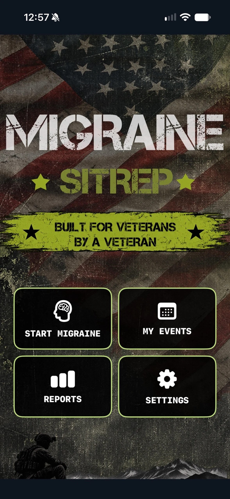

BUILT FOR VETERANS. BY A VETERAN.
Migraine SITREP.
Document migraine episodes, track their effect on daily life, and keep organized records with an iPhone app designed by a U.S. Navy veteran.
THE MISSION
Every episode tells a story. Capture the details.
When migraines interrupt daily life, having accurate records matters. Migraine SITREP helps you record episode times, symptoms, severity, and functional impact, with optional questions designed for VA-related documentation.
The app is awaiting approval for release on the Apple App Store.
- Episode start, end, and duration
- Pain intensity and associated symptoms
- Daily-life and occupational impact
- Episode history and monthly summaries
- Optional VA-focused questions and CSV export
SEE THE APP
A closer look at Migraine SITREP.
Five screens from the current iPhone app, showing how you can record episodes, review history, and document functional impact.
Image asset pending

Start a new migraine log or access your history.
Image asset pending

Record symptoms, severity, and timing.
Image asset pending

Review and manage past episodes.
Image asset pending

See a summary of your migraine history.
Image asset pending

Capture functional limitations with optional VA questions.
Test page preview: image slots use the latest supplied screenshot filenames. Assets will display when deployed to this website repository.
SIMPLE PRICING
One payment. $1.99.
No subscription. Migraine SITREP is designed to make consistent migraine documentation accessible and straightforward.
PRIVACY & RESPONSIBLE USE
Your records. Your control.
Migraine SITREP stores migraine information on your device, with optional Apple Health support. It is for personal symptom documentation, not medical diagnosis or emergency monitoring. The app is independent of, and not endorsed by, the U.S. Department of Veterans Affairs. Records do not guarantee a VA claim outcome.